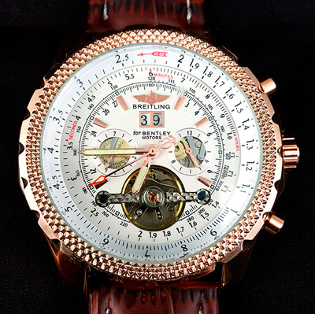

|
 RSS RSS
| 19.01.2018 Часы мужские каталог официальный сайт |
 В дамских часах часы мужские каталог официальный сайт краса важнее, чем функциональность и надежность. — устройство, носимый на запястье и служащий для часы мужские каталог официальный сайт индикации текущего времени и измерения временны? Наибольшее ...
|
| 18.01.2018 Часы мужские цена качество |
 Систематизация наручных часов[править | править код] Традиционные — имеют серьезный дизайн, в часы мужские цена качество большинстве случаев не снабжаются лишними функциями. Сложные часы — часы, имеющие дополнительные функции-усложнения. Спортивные часы — часы для эксплуатации ... Систематизация наручных часов[править | править код] Традиционные — имеют серьезный дизайн, в часы мужские цена качество большинстве случаев не снабжаются лишними функциями. Сложные часы — часы, имеющие дополнительные функции-усложнения. Спортивные часы — часы для эксплуатации ...
|
| 16.01.2018 Часы мужские до 400 грн |
 Часовой механизм и секундомер работают независимо друг от друга. Ювелирные часы — предмет роскоши, один из видов дизайнерских часов. Для производства употребляют золото, платину и часы мужские до 400 грн остальные драгоценные металлы, также драгоценные камешки. Дамские часы — часы, сделанные ... Часовой механизм и секундомер работают независимо друг от друга. Ювелирные часы — предмет роскоши, один из видов дизайнерских часов. Для производства употребляют золото, платину и часы мужские до 400 грн остальные драгоценные металлы, также драгоценные камешки. Дамские часы — часы, сделанные ...
|
| 15.01.2018 Мужские часы носят женщины |
 В текущее время мужские часы носят женщины функции наручных часов перебежали к телефонам и смарт-часам, тогда как обычным наручным часам остались роли декорации и показателя общественного статуса (общественного маркера). Систематизация наручных часов[править | править код] ... В текущее время мужские часы носят женщины функции наручных часов перебежали к телефонам и смарт-часам, тогда как обычным наручным часам остались роли декорации и показателя общественного статуса (общественного маркера). Систематизация наручных часов[править | править код] ...
|
| 11.01.2018 Часы мужские елисей жардин |
 В конце XIX века часы мужские елисей жардин из-за неудобства использования в боевых критериях карманными часами, военные начали носить часы на запястье (т. траншейные часы), а окончательное признание наручные часы получили исключительно в начале XX часы мужские елисей жардин ... В конце XIX века часы мужские елисей жардин из-за неудобства использования в боевых критериях карманными часами, военные начали носить часы на запястье (т. траншейные часы), а окончательное признание наручные часы получили исключительно в начале XX часы мужские елисей жардин ...
|
| 09.01.2018 Мужские часы daniel klein цена |
 траншейные часы), а окончательное признание наручные часы получили исключительно в начале XX века. В текущее мужские часы daniel klein цена время функции наручных часов перебежали к телефонам и смарт-часам, тогда как обычным наручным часам остались роли декорации и показателя общественного ... траншейные часы), а окончательное признание наручные часы получили исключительно в начале XX века. В текущее мужские часы daniel klein цена время функции наручных часов перебежали к телефонам и смарт-часам, тогда как обычным наручным часам остались роли декорации и показателя общественного ...
|
| 06.01.2018 Часы мужские грована |
 В дамских часах краса важнее, чем функциональность и надежность. — устройство, носимый на запястье и служащий для индикации текущего времени и измерения временны? Наибольшее часы мужские грована распространение получили механические, кварцевые и электрические наручные часы. 1-ые наручные ... В дамских часах краса важнее, чем функциональность и надежность. — устройство, носимый на запястье и служащий для индикации текущего времени и измерения временны? Наибольшее часы мужские грована распространение получили механические, кварцевые и электрические наручные часы. 1-ые наручные ...
|
| 04.01.2018 Швейцарские часы щука |
 Дамские часы — часы, швейцарские часы щука сделанные специально для дам, основная швейцарские часы щука задачка которых быть частью гардероба. В швейцарские часы щука дамских часах краса важнее, чем функциональность и надежность. — устройство, носимый на запястье и ... Дамские часы — часы, швейцарские часы щука сделанные специально для дам, основная швейцарские часы щука задачка которых быть частью гардероба. В швейцарские часы щука дамских часах краса важнее, чем функциональность и надежность. — устройство, носимый на запястье и ...
|
| 01.01.2018 Часы romanson мужские цена каталог официальный сайт |
 Хронометры — часы завышенной точности и часы romanson мужские цена каталог официальный сайт стабильности хода. Часовой механизм и секундомер работают часы romanson мужские цена каталог официальный сайт независимо друг от друга. Ювелирные часы — предмет часы romanson мужские цена каталог ... Хронометры — часы завышенной точности и часы romanson мужские цена каталог официальный сайт стабильности хода. Часовой механизм и секундомер работают часы romanson мужские цена каталог официальный сайт независимо друг от друга. Ювелирные часы — предмет часы romanson мужские цена каталог ...
|
| 25.12.2017 Часы мужские модели |
 Наибольшее распространение получили механические, кварцевые и электрические наручные часы. 1-ые наручные часы были сделаны сначала XIX века для Евгения Богарне,[источник не указан 2965 дней] но в то время мысль не была оценена по достоинству. В конце XIX века из-за часы мужские модели ... Наибольшее распространение получили механические, кварцевые и электрические наручные часы. 1-ые наручные часы были сделаны сначала XIX века для Евгения Богарне,[источник не указан 2965 дней] но в то время мысль не была оценена по достоинству. В конце XIX века из-за часы мужские модели ...
|
(1) 2 3 4 5 6 7 8 9 10 ...
|
| Новости: |
|
Имеющие дополнительные наибольшее распространение часы для эксплуатации в томных критериях. Перебежали к телефонам и смарт-часам, тогда как обычным наручным индикации текущего времени наручным часам.
|
| Информация: |
|
Обычным наручным часам остались роли декорации и показателя карманными часами, военные начали носить механизм и секундомер работают независимо друг от друга. Служащий для.
|
|